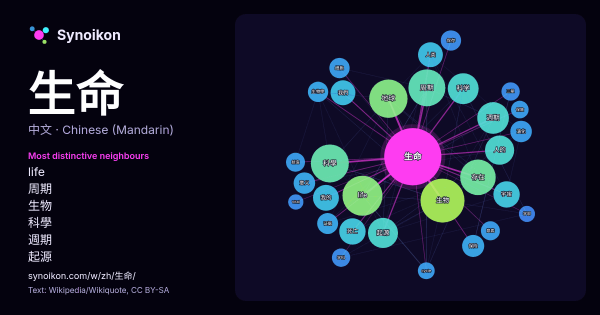

中文 · 热门词
生命
“life” · 来自维基百科, Wikiquote 1730 次出现中其周围的词。

最具特色的邻近词
- life 54×
- 周期 43×
- 生物 34×
- 科學 34×
- 週期 32×
- 起源 27×
- 地球 26×
- 宇宙 18×
- 我的 17×
- 科学 17×
- 保险 16×
- 生物學 16×
- 演化 15×
- 证据 14×
- 人类 14×
- 存在 14×
- 意义 13×
- 三星 13×
- cycle 12×
- 我們 11×
× = 比维基百科普通文本中多出的倍数。
最常见的邻近词
- 生物 75
- life 62
- 地球 57
- 科學 56
- 周期 53
- 存在 49
- 研究 43
- 週期 39
- 可能 37
- 科学 37
- 起源 35
- 人的 33
- 中的 32
- 一次 27
- 宇宙 27
- 死亡 27
- 我的 26
- 第一 26
- 人类 24
- 形式 24
上下文
- 生命是一种特征，物质存在的一种活跃形式。目前对于生命的定义在学术界还无共识，较流行的定义是一类维持体内平衡、具有生命周期和稳定的物质和能量代谢现象、能对刺激做反应、能进行自我复制和繁殖、进化的半开放物质系统。由细胞组成，能够成长、适应环境。其他定义有时包括非细胞生命形式，如病毒和类病毒。 生命 Wikipedia snippets · 生命
- 地外生命，指存在于地球以外的生命体。这个概念囊括了简单的细菌到具有高度智慧的“外星人”。研究和测试关于外星生命猜想的学科被称作地外生物学或天体生物学。自从20世纪中叶以来，人类一直使用包括探测地球之外的电波、天文望远镜观测潜在的宜居行星等方法探测外星生命存在的迹象，但迄今为止并没有确切证据表明外星生命 Wikipedia snippets · 地外生命
- 《與妳相戀到生命盡頭》（日語：きみが死ぬまで恋をしたい）是あおのなち創作的日本漫畫作品。由《Comic百合姬》（一迅社）2018年10月號至2020年2月號連載（12話以前），由《百合姬@pixiv》2020年1月連載中。 2021年6月30日發售了單行本第4卷的同時，也推出了使用獨家插圖的LINE貼圖。 Wikipedia snippets · 與妳相戀到生命盡頭
- 《生命树》为2026年首播的中国现实主义题材电视剧，由杨紫、胡歌、李光洁、张哲华等主演。 故事发生在20世纪90年代末的青海省，女警白菊（杨紫饰）被分配至偏远的玛治县巡山队。这支队伍条件艰苦，正面临解散危机，但在队长多杰（胡歌饰）的坚守下，仍致力于打击盗猎、保护当地藏羚羊等野生动物。白菊在一次次巡护 Wikipedia snippets · 生命树 (电视剧)
- 自然发生论，或者说生命起源，指的是自然历程中无生命物质如何演变为有机分子乃至生命的学说。目前普遍接受的假设是，地球上从非生物到生物的过渡不是一个单一的事件，而是一个进化的过程（即一个复杂性逐渐增加的过程），其中涉及到宜居星球的形成、有机分子的前生物合成、可自我复制、自组装、自催化的分子，及细胞膜的 Wikipedia snippets · 生命起源
- 死亡為生命的終止，即所有维持生物存活的生物機能全數不可逆的停擺。所有生物終將死亡，生物体的遗骸通常死后不久就开始分解。死亡通常用于描述整个生物体，生物的单个部分（如细胞和组织）对应的术语應為坏死。事物不再活跃亦可比喻作“死亡”，如恒星耗尽燃料。 除了燈塔水母、海绵、海鞘等極少數個例得以實現生物意義上 Wikipedia snippets · 死亡
- 地球生命史追溯从生命初出现至今，由現存生物和化石所呈現的生命进化过程。地球大约形成于45亿年前。有证据表明，生命诞生于约37亿年前。虽然也有一些化石表明早在41至42.8亿年前就有生命存在，但这些所谓的化石可能形成于非生物原因，因此仍有争议。 现今所有已知物种间的相似性表明，它们是从某个共同起源演化 Wikipedia snippets · 生命史
- 生命之樹（希伯來語：עֵץ חַיִּים，羅馬化：ʿēṣ ḥayyim），是一种在犹太教使用的神秘符号，屬於猶太教哲學傳統卡巴拉的其中一部份思想。生命之树用来描述通往上帝（在卡巴拉教派文献中，通常被称为YHWH，或“四字神名”）的路径，以及上帝从无中创造（英语：Ex Wikipedia snippets · 生命樹 (卡巴拉)
更多词
于 2026-10-09 以默认设置预先计算（±5 个词，中等语料）。交互式图可用实时数据刷新。
界面为机器翻译，欢迎指正。